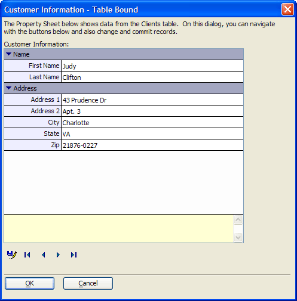
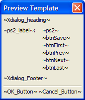
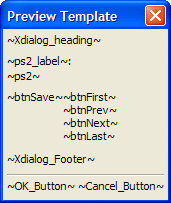

Populated from a Table
This topic describes the process of creating a property sheet that is bound to a table, and can support data entry and editing. This property sheet was created with the Property Sheet Builder in Action Scripting. See Property-Sheet Style Xdialog.

After selecting the "Display an Xdialog Box" action script, the designer created 6 variables.
ps2 - captures the output of the ((|#Designing_the_Property_Sheet_Dialog|Property Sheet dialog))
btnSave - saves the content of the controls on the property sheet
btnFirst - navigates to the first record in the table
btnPrev - navigates to the previous record in the table
btnNext - navigates to the next record in the table
btnLast - navigates to the last record in the table
Designing the Property Sheet Dialog
To create the property sheet:
The designer selected the ps2 variable.
Set the Width to 80 characters and Height to 25 lines.
Clicked Define Property-Sheet Dialog in the Style list to display the Initial Code tab of the Property Sheet Builder.
Defined the following variables and Xbasic code. Note that the fields of the clients table are child elements of the ptr pointer variable. The Xbasic code reads the first record of the table and uses the <TBL>.RECORD_TO_VARS()method to set the individual control values. The result is that the first record will appear when the dialog displays.
dim ptr as P dim ptr.customer_id as c dim ptr.zip as c dim ptr.state as c dim ptr.city as c dim ptr.address2 as c dim ptr.address1 as c dim ptr.lastname as c dim ptr.firstname as c dim tbl as P tbl = table.open("clients") tbl.order("lastname") tbl.fetch_first() tbl.record_to_vars(ptr) |
The designer then placed the appropriate clients table fields into Edit controls on the Items tab. For example, the field labelled "Address 1" was bound to the variable p.address1.
Clicked OK to conclude the property sheet design.
To create the Save Record function:
The designer selected the btnSave variable, selected "Button" in the Style list, and clicked Define Button.
Selected "Picture only" in the Button Style list.
In the Image Name control clicked
 and selected and clicked Insert.
and selected and clicked Insert.In the Button Action list selected "Run Xbasic".
In the Xbasic edit control entered the following code. The PROPERTY_RECURSE_ASSIGN()function copies the values of the ptr dot variable to the tbl dot variable.
tbl.change_begin() property_recurse_assign(tbl, ptr) tbl.change_end(.t.) |
In the After Action list selected "Keep Dialog Box Open".
To create the First Record function:
The designer selected the btnFirst variable, selected "Button" in the Style list, and clicked Define Button.
Selected "Picture only" in the Button Style list.
In the Image Name control clicked
and selected  and clicked Insert.
and clicked Insert.In the Button Action list selected "Run Xbasic".
In the Xbasic edit control entered the following code. The PROPERTY_RECURSE_ASSIGN()function copies the values of the ptr dot variable to the tbl dot variable.
tbl.fetch_first() tbl.record_to_vars() |
In the After Action list selected "Keep Dialog Box Open".
To create the Previous Record function:
The designer selected the btnPrev variable, selected "Button" in the Style list, and clicked Define Button.
Selected "Picture only" in the Button Style list.
In the Image Name control clicked
and selected  and clicked Insert.
and clicked Insert.In the Button Action list selected "Run Xbasic".
In the Xbasic edit control entered the following code. The PROPERTY_RECURSE_ASSIGN()function copies the values of the ptr dot variable to the tbl dot variable.
tbl.fetch_prev() tbl.record_to_vars() |
In the After Action list selected "Keep Dialog Box Open".
To create the Next Record function:
The designer selected the btnNext variable, selected "Button" in the Style list, and clicked Define Button.
Selected "Picture only" in the Button Style list.
In the Image Name control clicked
and selected  and clicked Insert.
and clicked Insert.In the Button Action list selected "Run Xbasic".
In the Xbasic edit control entered the following code. The PROPERTY_RECURSE_ASSIGN()function copies the values of the ptr dot variable to the tbl dot variable.
tbl.fetch_next() tbl.record_to_vars() |
In the After Action list selected "Keep Dialog Box Open".
To create the Last Record function:
The designer selected the btnLast variable, selected "Button" in the Style list, and clicked Define Button.
Selected "Picture only" in the Button Style list.
In the Image Name control clicked
and selected and clicked Insert.In the Button Action list selected "Run Xbasic".
In the Xbasic edit control entered the following code. The PROPERTY_RECURSE_ASSIGN()function copies the values of the ptr dot variable to the tbl dot variable.
tbl.fetch_last() tbl.record_to_vars() |
In the After Action list selected "Keep Dialog Box Open".
After completing the button definitions, the designer clicked Next > to display the second screen of the Script Genie.
The designer selected Customize Xdialog layout and modified the code from:
|  |
to the following. The result was to reposition the buttons below the property sheet.
|  |
The designer added a Title for the dialog, then clicked Next >, Next >, and Finish.
Finally, the designer clicked Add New Action and selected "Xbasic" from the Category list and "In-Line Xbasic" from the Action list.
The window contains the code necessary to close the table when the action script ends. This is:
tbl.close() |
See Also
Limitations
Desktop applications only